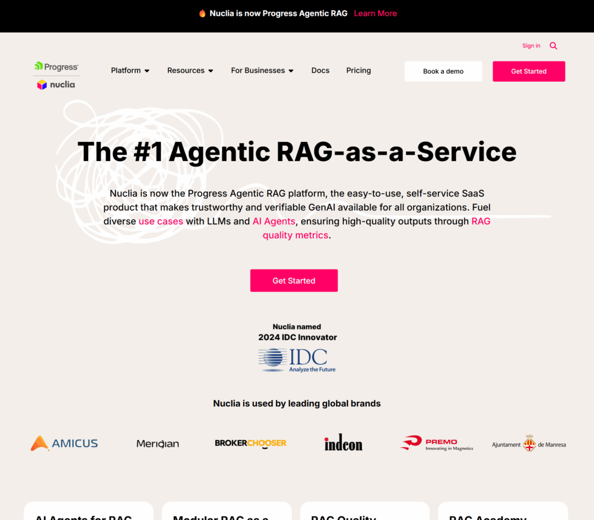
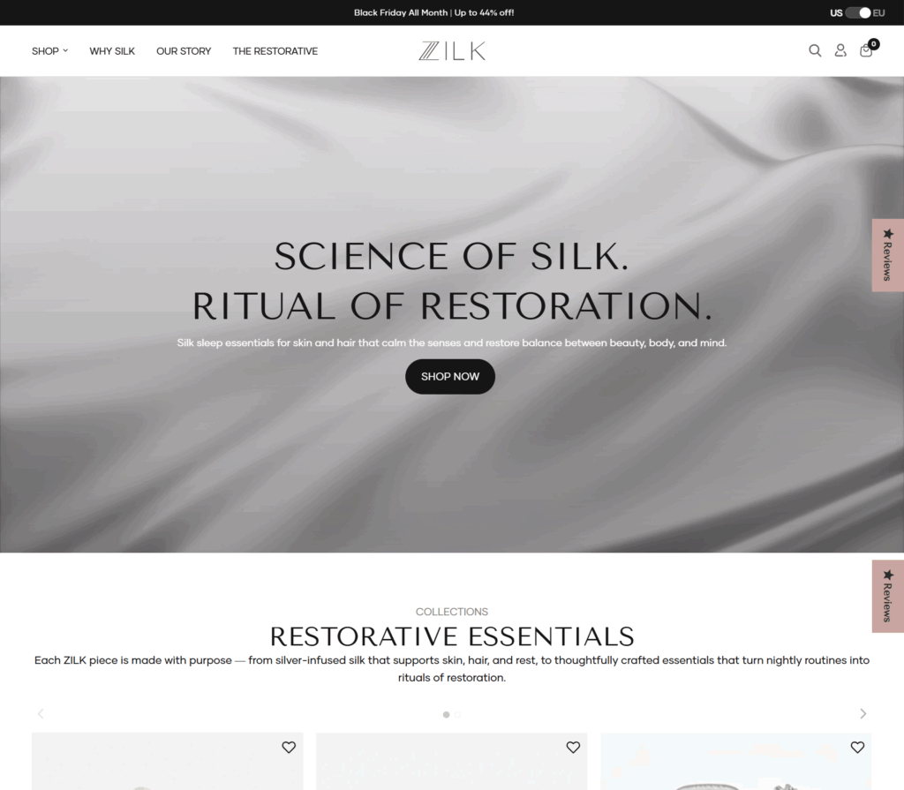
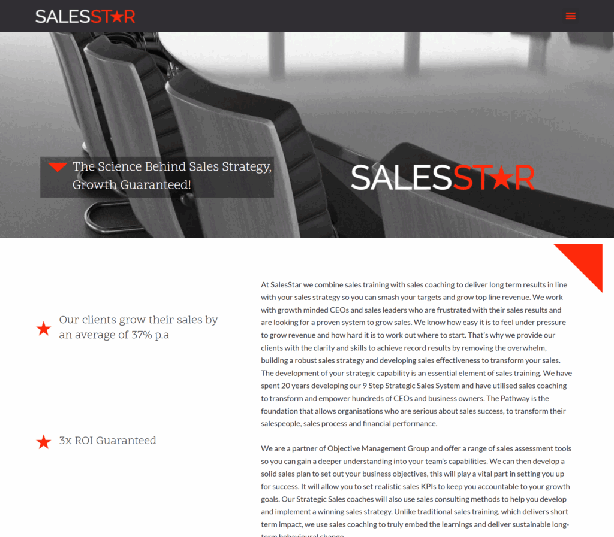

Fine-Tuning vs. RAG: Cost-Benefit Modeling for Multi-Tenant Software
When does domain-specific parameter adaptation justify the GPU overhead compared to hybrid vector retrieval? Real telemetry across 40+ production systems.
Deep architectural blueprints, production telemetry, and tactical playbooks from our senior tech directors, cloud architects, and full-stack software engineers.

A comprehensive field guide to tackling retrieval degradation, hallucination containment, and low-latency chunk re-ranking in high-concurrency enterprise document ecosystems.
When does domain-specific parameter adaptation justify the GPU overhead compared to hybrid vector retrieval? Real telemetry across 40+ production systems.
Benchmarking cross-platform performance across 12 high-traffic production apps to establish clear technical decision boundaries for enterprise mobile stacks.
Solving idempotency, out-of-order execution, and dead-letter queue backpressure in distributed transaction backends processing 50k+ requests per second.

Deconstructing edge caching, dynamic cart synchronization, and sub-100ms checkout response times for omnichannel direct-to-consumer luxury brands.
Implementing determinism, human-in-the-loop intervention thresholds, and strict compliance logs when deploying reasoning agents across ERP workflows.

Practical blueprints for embedding pre-vetted senior software pods into western tech organizations without bureaucratic drag or quality dilution.